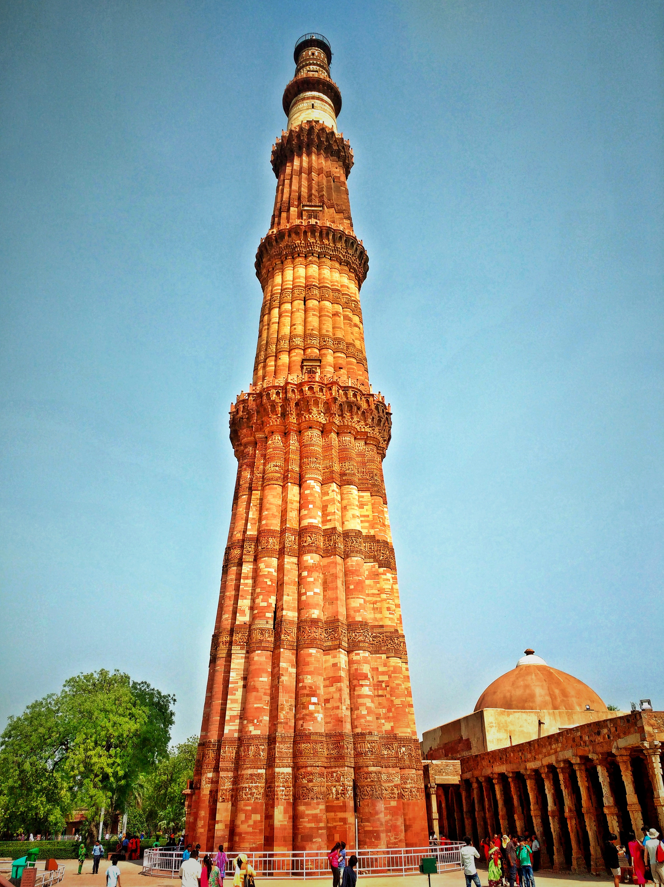
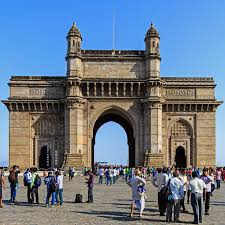

Attractions
This page is about attractions in India.
The Taj Mahal
The Taj Mahal is an ivory-white marble mausoleum on the south bank of the Yamuna river in the Indian city of Agra. It was commissioned in 1632 by the Mughal emperor Shah Jahan(reigned from 1628 to 1658) to house the tomb of his favourite wife, Mumtaz Mahal; it also houses the tomb of Shah Jahan himself. The tomb is the centrepiece of a 17-hectare (42 acre) complex, which includes a mosque and a guest house, and is set in formal gardens bounded on 3 sides by a crenellated wall. Construction of the mausoleum was essentially completed in 1643, but work continued on other phases for the project for another 10 years. The Taj Mahal complex is believed to have been completed in its entirety in 1653 at a cost estimated at the time to be around 32 million rupees, which in 2015 would be approximately 52.8 billion rupees. The constuction project employed some 20,000 artisans under the guidence of a board of architects led by the court architect to the emperor, Ustad Ahmed Lahauri. It attracts 7-8 million visitors every year. Shah Jahan wanted to build a black Taj Mahal so he could be a shadow of his wife but his son didn't let him. Photography is not allowed inside.
The Taj Mahal opens at to except on Fridays
Things not allowed inside the Taj Mahal
- Arms
- Ammunitions
- Smoking Items
- Tobacco products
- Liquor
- Eatables
- Knives
- Fire
- Headphones
- Wire
- Mobile Charger
- Electric Goods
- Handbags
The Taj Mahal

Quotes about the Taj Mahal
"Marble, I perceive, covers a multitude of sins."
― Aldous Huxley
The Red Fort
The Red Fort is located in the centre of Dehli. It has a great history as it was the main residence of Mughal emperors for nearly 200 years. It houses a large number of museums. Shah Jahan lived in the Red Fort. Shah Jahan built the Red Fort. It belongs to the Dalmia Bharat Group. The Red sandstone walls in the Red Fort rise 33m above the clamour of Old Delhi as a reminder of the magnificent power of the Mughal emperors.
Agra Fort
Agra Fort is a historical fort in the city of Agra in India. It was the main residence of the Mughal Dynasty until 1638 when the capital was shifted from Agra to Delhi. Before the capture by the British, the last Indian emperor to occupy it were the Marathas. In 1983 the Agra Fort was inscribed as a UNESCO World Heritage site. It is about 2.5 km northwest of its more famous sister monument, The Taj Mahal.
India Gate
The India Gate was established on 10 February 1921. It was unveiled on 12 February 1933. There is a war memorial which is astride the Rajpath on the eastern edge of the 'ceremonial axis' of New Delhi. It stands there as a memorial to 70,000 soldiers of the British Indian Army who died in between 1914-1921 in the First World War in France, Flanders, Mesopotamia, Persia, East Africa, Gallipoli and elsewere in the Near and the Far East.

Lotus Temple
The Lotus Temple, located in Delhi, India, is a Baháʼí House of Worship that was dedicated in December 1986. It is in the shape of a lotus. Like all Bahá'í House of Worship, the Lotus Temple is open to all. The building is composed of 27 free- standing marble-clad petals arranged in clusters of 3 to form nine sides, with 9 doors opening into a central hall with a height of slightly over 34.27 metres and a capacity of 2,500 people.

Swaminarayan Akshardham
Swaminarayan Akshardham or Akshardham Temple is a Hindu temple and a spiritual-cultural campus in Delhi, India. In the temple there are clomlex displays of traditional Hindu and Indian culture, spirituality, and architecture. Inspired by Yogiji Maharaj and created by Pramukh Swami Maharajc it was constucted by BAPS. The temple was officially opened on 6th November 2005.

Qutab Minar
The Qutab Minar also spelt as Qutb Minar, is a minerat that forms part of the Qutb complex, a UNESCO World Heritage Site in the Mehrauli area of Delhi, India. The Qutub Minar is a 73 metre(239.5 feet) tall tapering tower of 5 stories, with a 14.3 metres (47 feet) base diameter reducing to 2.7 metres (9 feet) at the top of the peak. It contains a spiral staircase of 379 steps. Qutb al-Din Aibak, founder of the Dehli Sultanate, started construction of the Qutub Minars first storey around 1199. In 1220, Aibak's successor and son-in-law Shamsuddin Illtutmish completed a further three storeys. In 1369, a lightening strike destroyed the top storey. Firoz Shah Tughlaq, replaced the damaged storey and added one more. Sher Shah Suri added an entrance to this tower and Humayun was in exile. 
The Gateway of India
The Gateway of India is an arch-monument built in the early twentieth century in the city of Mumbai in the Indian state of Maharashtra. It was erected to commemorate the landing in December 1911 at Apollo Bunder, Mumbai of King-Emperor George V and Queen-Empress Mary, the first British monarch to visit India. At the time of the royal visit, the gateway was not yet built,and a cardboard structure greeted the monarch. The foundation stone was laid in March 1913 for a monument built in the Indo-Saracenic style, incorporating elements of 16th century Marathi architecture. The final design of the monument by architect George Wittet was sanctioned only in 1914 and construction was completed in 1924. The structure is a triumphal arch made of basalt which is 26 meters(85 feet) high.
These are eight very important attractions in India which are still there today.
| Attraction | Visitors every year | Location |
|---|---|---|
| Taj Mahal | 7-8 million | Agra, India |
| The Red Fort | 3.6 million | Delhi, India |
| Agra Fort | 2.3 million | Agra, India |
| Qutub Minar | 2.9 million | Delhi, India |
| India Gate | 5 million | Delhi,India |
| Lotus Temple | 4.5 million | Delhi, India |
| Akshardham Temple | 1825000 | Delhi, India |
| Gateway of India | 2000-2500 | Mumbai, India |